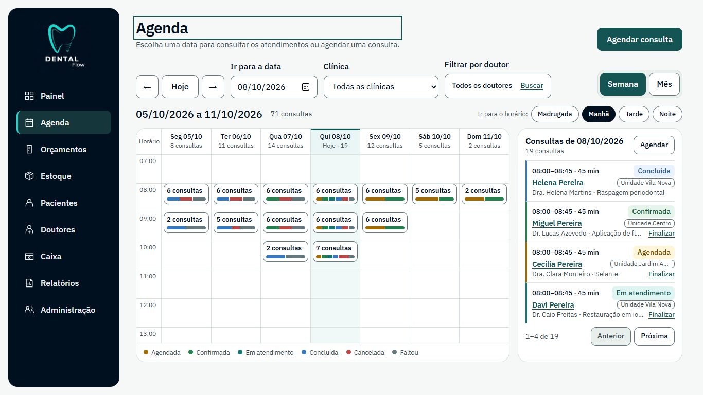

Mesma tela, quatro olhares: agenda do dia na recepção
Atual = captura da implementação (semana, 1366 px). A, B e C = protótipos estáticos com o mesmo conteúdo fictício. Nada aqui está implementado.

Atual = captura da implementação (semana, 1366 px). A, B e C = protótipos estáticos com o mesmo conteúdo fictício. Nada aqui está implementado.
